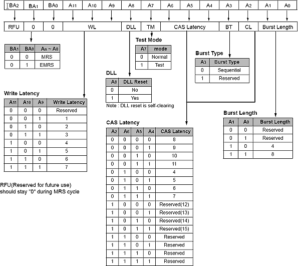

Mode Register Set (MRS)
The mode register stores the data for controlling the various operating modes of GDDR3 SDRAM. It programs CAS latency, addressing mode, test mode and various vendor specific options to make GDDR3 SDRAM useful for variety of different applications. Refer to the figure below for specific codes for various addressing modes and CAS latencies.
